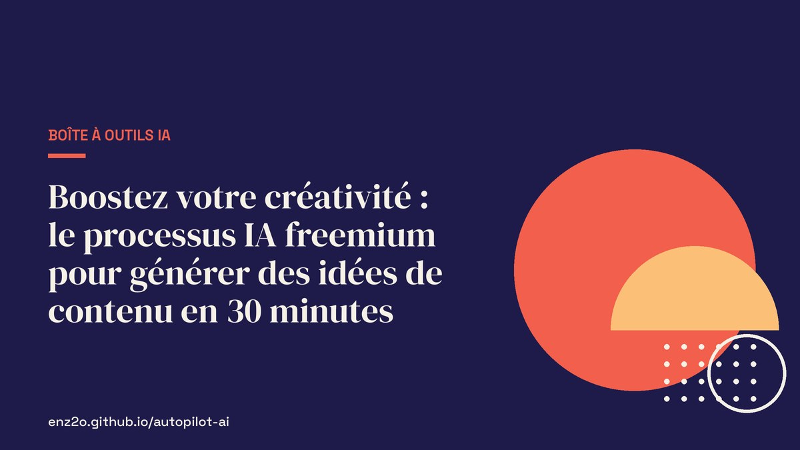

Boostez votre créativité : le processus IA freemium pour générer des idées de contenu en 30 minutes
2026-11-24
Article contenant des liens affiliés.

Introduction
Dans un monde où le flux d'informations ne cesse de croître, la capacité à produire du contenu original rapidement devient un vrai avantage concurrentiel. Heureusement, plusieurs outils d'intelligence artificielle (IA) gratuits ou en modèle freemium permettent de structurer le brainstorming, la recherche et la mise en forme des idées sans dépenser un centime. Dans cet article, nous vous présentons un processus en 5 étapes, 100 % gratuit, que vous pouvez appliquer dès aujourd’hui pour générer des concepts de blog, vidéos, podcasts ou formations en moins de 30 minutes.
Étape 1 : Clarifier votre cible et vos thématiques
Avant même d’ouvrir un outil, notez clairement : - Qui est votre audience (freelance, étudiant, créateur) ? - Quel problème cherchez‑vous à résoudre ? - Quel format privilégiez‑vous (article, vidéo, infographie)…
Utilisez un simple fichier Google Docs ou une note dans Notion (plan gratuit) pour consigner ces informations. Cette petite étape évite les digressions et oriente les IA vers des réponses pertinentes.
Étape 2 : Alimenter les IA de recherche gratuite
2.1. Google Scholar & Semantic Scholar (gratuit)
Recherchez les mots‑clés identifiés à l’étape 1. Copiez les 3 à 5 titres les plus pertinents. Cela vous donne un aperçu des sujets déjà traités et des angles encore vierges.
2.2. ChatGPT (version gratuite) ou Claude‑2 (beta gratuite)
Prompt type :
Tu es un expert en [votre domaine]. Propose 10 angles originaux de contenu pour un public de [type d’audience] qui s’intéresse à [sujet]. Chaque angle doit être présenté sous forme de titre accrocheur et d’une phrase d’accroche.
Copiez‑collez les réponses dans votre tableau de suivi.
2.3. AnswerThePublic (plan gratuit limité à 3 recherches/jour)
Entrez votre mot‑clé principal. L’outil génère une carte de questions que se posent les internautes. Sélectionnez les 5 questions les plus fréquentes.
Étape 3 : Centraliser les idées dans un tableau Kanban gratuit
Des outils comme Trello (plan gratuit) ou Miro (board gratuit) permettent de créer trois colonnes : 1. Idées brutes – toutes les suggestions de l’étape 2. 2. À valider – choisissez les 3 à 5 idées qui correspondent le mieux à votre audience. 3. En cours – idées sélectionnées pour le prochain sprint de création.
Glissez‑déposez, ajoutez des étiquettes couleur (ex. : #blog, #vidéo, #podcast) et définissez une date de mise en production.
Étape 4 : Structurer chaque idée avec un cadre prêt à l’emploi
4.1. Utiliser le modèle “Problem‑Agitate‑Solution” (PAS)
- Problem : quel problème l’audience rencontre ?
- Agitate : pourquoi ce problème est crucial ?
- Solution : comment votre contenu apporte la réponse.
4.2. Générer un plan détaillé avec l’IA
Prompt type :
En suivant la méthode PAS, rédige un plan détaillé en 5 parties pour le titre suivant : "[Titre choisi]". Chaque partie doit contenir 2 à 3 sous‑points.
Copiez le plan dans votre carte Trello. Vous avez ainsi un squelette prêt à être développé.
Étape 5 : Automatiser la diffusion de vos idées validées
Une fois le contenu créé, vous devez le publier sans perdre de temps : - Calendrier éditorial : créez un tableau Google Sheet partagé où chaque ligne correspond à une date de publication, le format et le titre. - Automation email : si vous avez déjà une newsletter, utilisez Systeme.io pour programmer l’envoi automatique dès que le contenu est en ligne. Systeme.io - Réplication sur les réseaux : Zapier (plan gratuit) permet de connecter votre Google Sheet à Buffer (plan gratuit) pour programmer les posts LinkedIn, Twitter ou Instagram.
Bonus : Mesurer l’impact en 5 minutes
Installez le plugin Google Analytics (gratuit) sur votre blog et créez un tableau de bord simple dans Data Studio (gratuit). Suivez les indicateurs clés : vues, temps moyen sur page, partages sociaux. Ajustez votre processus en fonction des résultats.
Conclusion
En combinant des IA gratuites, des outils freemium de gestion de projet et une méthode de structuration claire, vous pouvez transformer le brainstorming en une machine à idées fiable, sans aucune dépense. Testez ce processus pendant une semaine, notez vos gains de temps et adaptez‑le à votre propre stack digitale. Vous avez désormais toutes les cartes en main pour produire du contenu de qualité, rapidement et à moindre coût.
Vous cherchez une solution tout‑en‑un pour héberger vos formations, gérer vos tunnels de vente et automatiser vos emails ? Découvrez Systeme.io, l’outil français freemium qui regroupe tout cela sans frais additionnels. Systeme.io